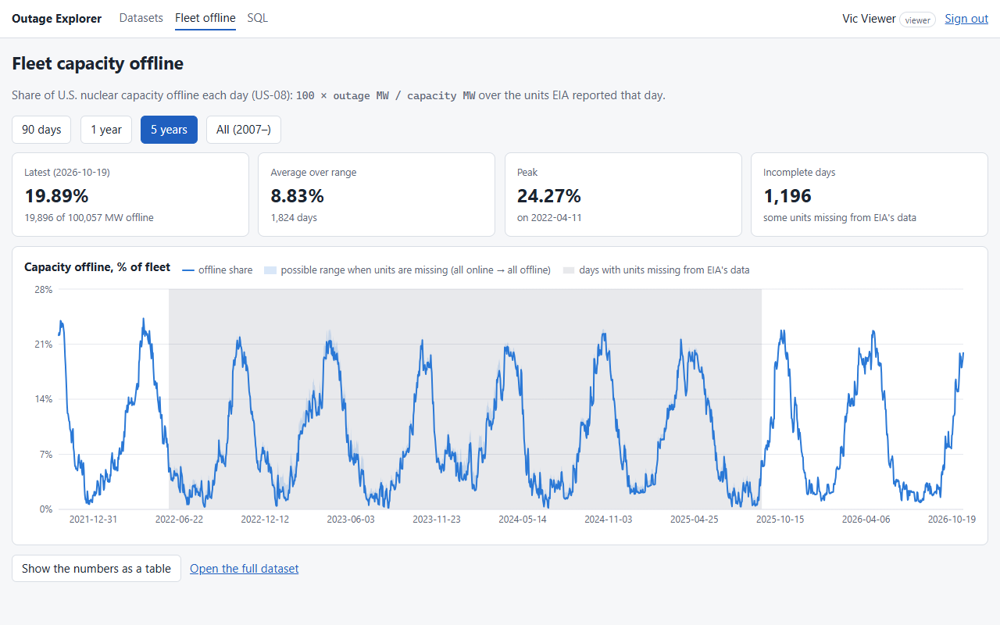
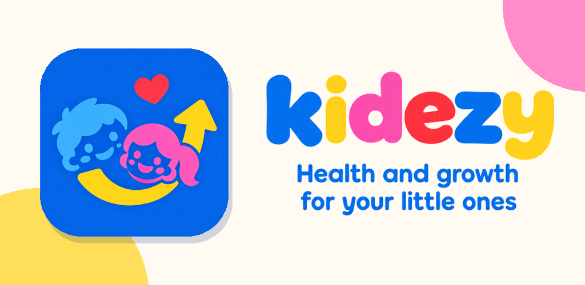

Senior Backend Engineer · Python · AWS · Distributed Systems
I build backend systems that hold up in production, and the interfaces on top of them.
I'm Abraham, a Senior Backend Engineer with 8+ years of experience building scalable backend systems, APIs and distributed architectures. Right now I lead development of Vet Online Booking at Petco.
- Years in software
- 8+
- Daily visits on the platform I lead
- 50K
- Appointments booked per day
- 10K
- Microservices maintained
- 17
01 About
Most of my work lives on the server: Python services in Django, FastAPI and Starlette, Node.js APIs, event-driven systems on Kafka, and serverless workloads on AWS. I've migrated legacy integration platforms to the cloud, kept fleets of microservices healthy, and run the Airflow pipelines that process 1M+ records daily.
I also work in the browser. At Petco I ship features end to end, from React and TypeScript components to the Django services and GraphQL and REST integrations behind them, then through the GitLab CI/CD pipelines that deliver them.
I care about systems people can operate: clear monitoring, automated tests, and code the next engineer can read. I've led development efforts, mentored junior engineers, and worked across teams on architecture and production support.
- Currently
- Senior Software Engineer at Petco
- Focus
- Python, AWS, distributed systems
- Work authorization
- TN Visa Eligible (USMCA) – No Sponsorship Required
- Languages
- Fluent English (TOEFL 583)
02 Projects
-

Outage Explorer
Explore and query U.S. nuclear outage data from the EIA API, covering 1.1M+ rows since 2007. Users can run read-only SQL, and each role queries its own database holding only the tables and columns it may see.
Demo login for a local run:
analyst/analyst-demo-pass -

Kidezy
Lets families track a child's growth, milestones and medication reminders, with shared access for caregivers. It also scans prescription photos with AI and works in English and Spanish.
-
The Alarm Buddy In progress
An Android alarm app that ramps up gently and can alert a partner or family member when you don't get up, built on a native Kotlin alarm module and a Spring Boot API.
03 Experience
-
Feb 2025 – Present
Senior Software Engineer Petco
- Lead development of Vet Online Booking, serving around 50,000 visits and 10,000 appointments per day, using React, TypeScript, and Django-backed services.
- Increased booking conversion by 5 percentage points by redesigning the appointment flow.
- Migrated a service from a REST API to a GraphQL endpoint, using a shadow release to validate it against production traffic before cutover.
- Refactor legacy modules to improve application performance, maintainability, and scalability.
- Extended GitLab CI/CD pipelines with client and server test coverage, an AI code review assistant, and tagged deployments.
- Collaborate across teams on API integrations, architecture discussions, and production support.
-
Oct 2024 – Feb 2025
Software Engineering Consultant TLNT · Contract
- Developed internal applications, reporting systems, and backend services using Python and Starlette.
- Built observability solutions using Vector and Axiom that detect anomalies in real time, cutting incident detection time by about 1 hour.
- Resolved performance bottlenecks and delivered scalable solutions aligned with business requirements.
-
Aug 2022 – Oct 2024
Software Engineer Luxoft
Client: global quick-service restaurant brand
- Architected migration of 4 legacy TIBCO integrations, moving document processing and parameter updates to AWS serverless solutions using Python, Lambda, S3, and DynamoDB.
Client: global online travel company
- Maintained 17 production microservices, built with Python, Java, and JavaScript using Kafka and MongoDB.
- Processed large-scale datasets using Scala and PySpark, supporting 10,000+ active users.
- Developed monitoring dashboards and alerts using Splunk and Datadog to improve reliability.
Across both clients
- Deployed services through Jenkins CI/CD pipelines, using Docker for local development environments.
-
Jun 2021 – Aug 2022
Technology Analyst Infosys
- Maintained and extended a 25-step Python/SQL data pipeline on Google Cloud Composer (Airflow) that automates replenishment of 1M+ BigQuery records daily, adding 2 steps and reducing total run time by 5%.
- Implemented CI/CD processes using TeamCity and GitHub to improve deployment efficiency.
-
Jan 2019 – Jun 2021
Developer Analyst GT Logistics
- Led development efforts and mentored 2 junior engineers across logistics technology projects.
- Architected integrations across 6 systems, including an on-premises CRM, 3PL Central WMS, two TMS platforms, SAP, and a BPM system, using Laravel, Node.js, and REST APIs.
- Developed real-time shipment visibility solutions using React, Angular, and Ionic.
-
Jan 2018 – Jan 2019
Systems Engineer Softtek / DXC Technology
- Provided L4 support for enterprise inventory management systems used across the Americas.
- Maintained C# .NET applications and Oracle database integrations.
- Resolved 45+ client production tickets and supported release management processes.
04 Skills
- Languages
- Python, JavaScript, TypeScript, Java, SQL, Scala, PHP, C#
- Backend
- Django, FastAPI, Starlette, Node.js, Express, Laravel, REST APIs, GraphQL, SOAP, Microservices
- Frontend
- React, Angular, Ionic
- Cloud & DevOps
- AWS (Lambda, S3, DynamoDB), GCP (BigQuery, Cloud Composer), Docker, GitLab CI/CD, Jenkins, TeamCity
- Data Engineering
- Kafka, Airflow, PySpark, BigQuery, ETL Pipelines
- Databases
- PostgreSQL, MongoDB, DynamoDB, Oracle, SQLite
- Monitoring
- Datadog, Splunk, Axiom, Vector
- Enterprise Integration
- SAP, TIBCO, 3PL Central (WMS)
Education
B.S. Information Technology Engineering
Instituto Tecnológico de Ciudad Madero
Professional License #11349397
Certification
Microsoft Azure Fundamentals
AZ-900
05 Contact
Have a role or a project in mind? Send me a message here, or email me directly.
abrahamgeadiaz@gmail.comTN Visa Eligible (USMCA) – No Sponsorship Required